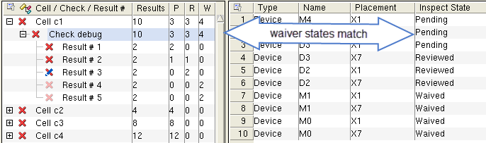

Generating Multi-User Topology Waivers
The multi-user waiver flow allows multiple users to assess the waiver status of topology check results in a Mask SVDB Directory. Each user marks the waiver state for results in Calibre RVE for PERC.
A user may change the state of any result at any time, unless a check is specified with SELECTTYPE UNWAIVABLE in the PERC Load statement. The output of this procedure is a “delta” waiver file that is imported later in the flow.
Prerequisites
Knowledge of the three waiver states discussed under “Multi-User Waiver Flow”.
Calibre PERC has been run using the PERC Report Maximum ALL setting.
If you do not run with the ALL setting, there is no way to guarantee you waive all results of concern.
A Mask SVDB Directory from a Calibre PERC run, and the MUWDB keyword is used.
A Calibre RVE license.
(Optional) To force the use of the waiver comment dialog box, set the environment variable MGC_CALIBRE_RVE_ENFORCE_WAIVER_COMMENT to 1 before starting Calibre RVE. See “Force Use of Waiver Comment Dialog Box” in the Calibre RVE User’s Manual.
Procedure
- (Optional) In the PERC Results
tab, click the Group By button (
 ) to
select a grouping hierarchy for the Tree View. See “Grouping Results in Calibre RVE for PERC” in the Calibre RVE
User’s Manual for more information.
) to
select a grouping hierarchy for the Tree View. See “Grouping Results in Calibre RVE for PERC” in the Calibre RVE
User’s Manual for more information. - Mark results with waiver statuses
as needed. The procedure is the same as for “Generating Topology Results Waivers”.
Figure 1 shows the right-click menus for marking results. Use Shift- or Ctrl-click to select multiple items.
Figure 1. Marking Waiver Status in Calibre PERC Results
If a check is specified with SELECTTYPE UNWAIVABLE in the PERC Load statement, the status cannot be changed.
Waived results in the tree view are indicated with a dim red X and a positive integer in the W column. These results in the instance table are indicated by the word “Waived” in the Inspect State column.
Reviewed results in the tree view are indicated by a blue and red X and a positive integer in the R column. (A red X appears if there are any Pending results in a results group.) Reviewed results in the instance table are indicated by the word “Reviewed” in the Inspect State column.
Results that are unmarked with either of the previous states are indicated with a red X and a positive integer in the P column. These results in the instance table are indicated by the word “Pending” in the Inspect State column. Changing a state to Pending erases any comment associated with the waiver.
Results
The output is a multi-user (delta) waiver file. These files are generated by multiple users and are needed in the procedure “Importing Multi-User Waivers to Generate Results Waivers”.